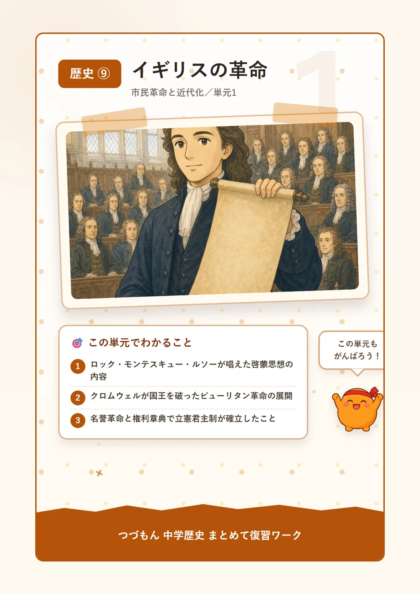
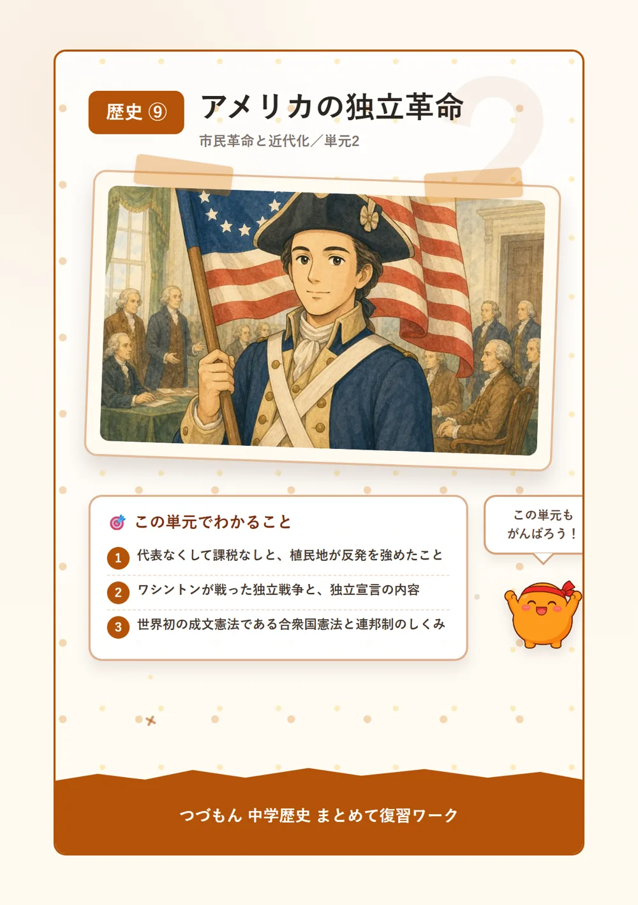
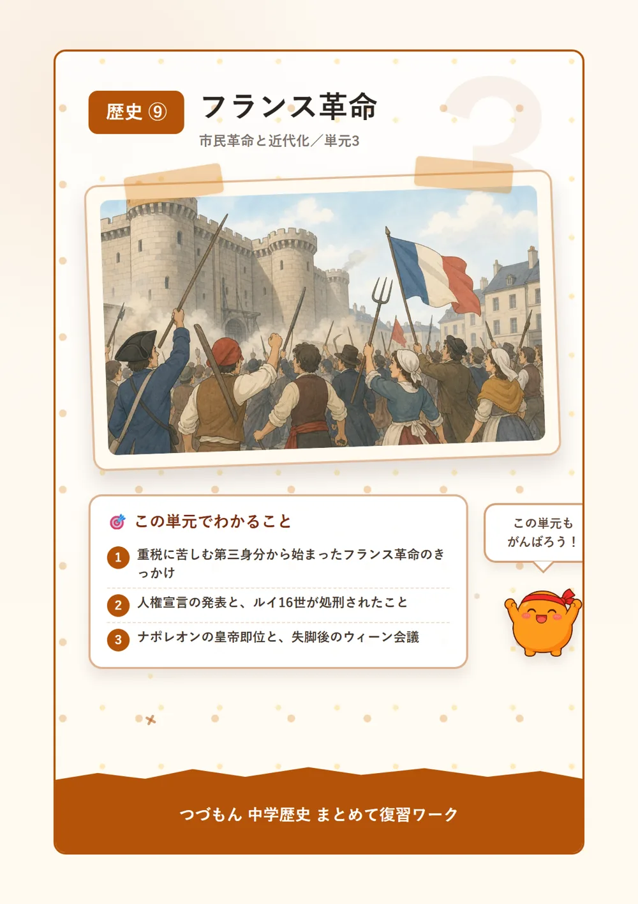
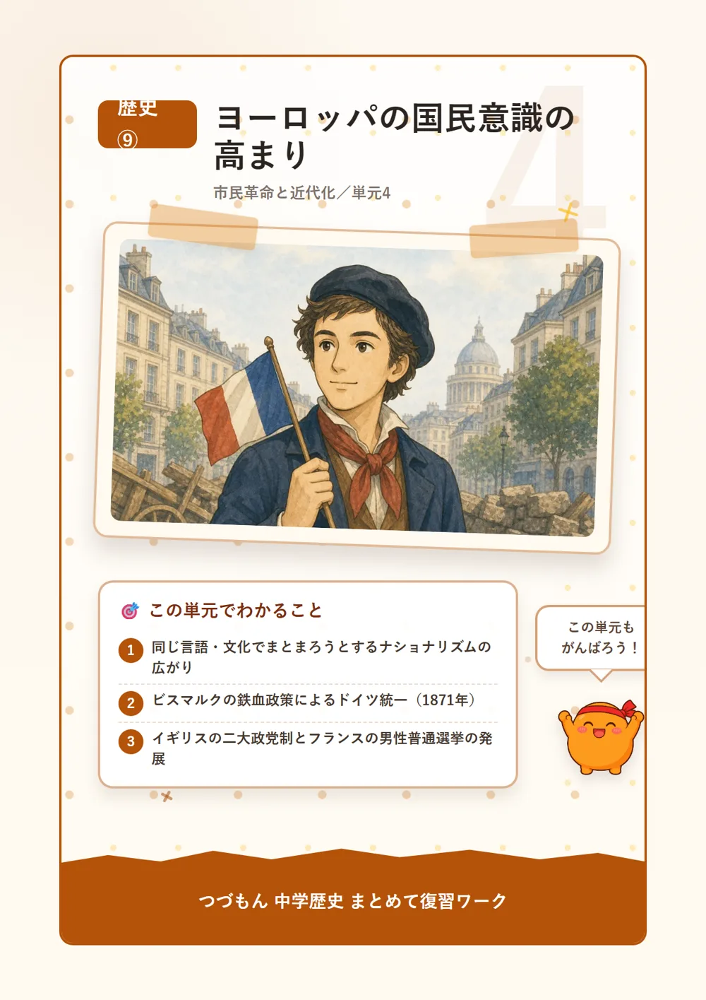
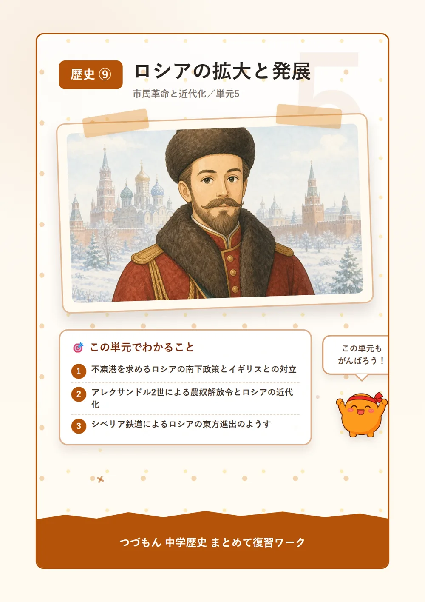
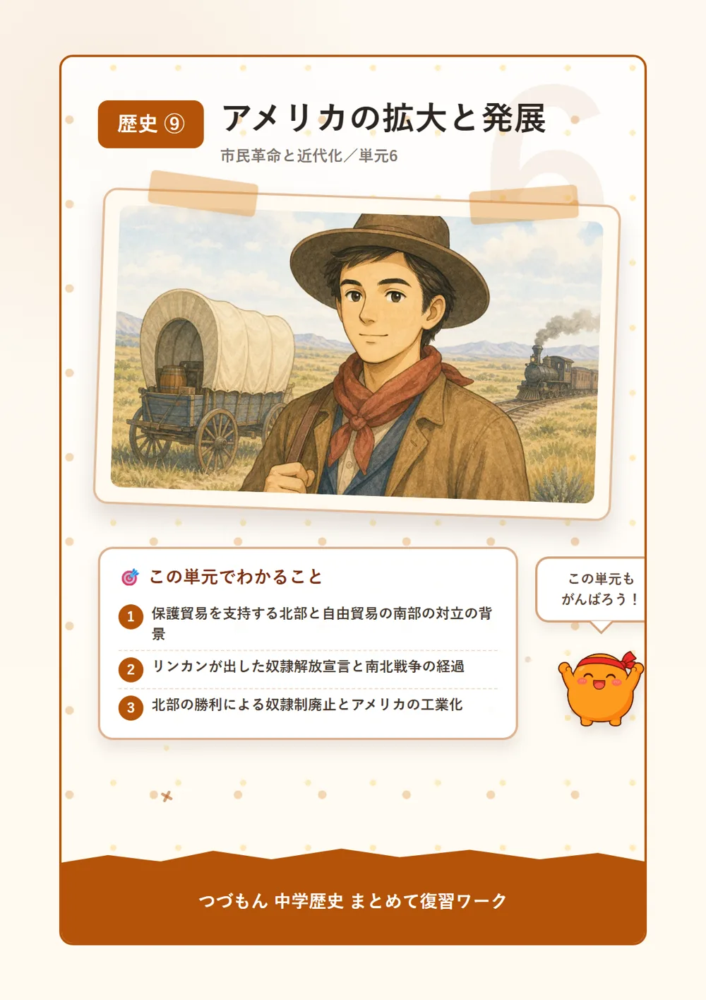
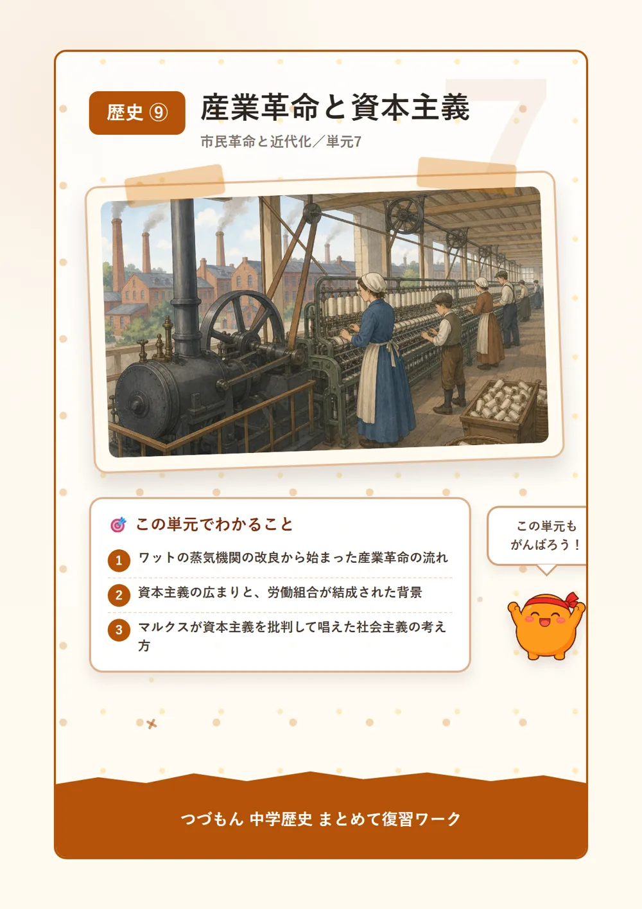
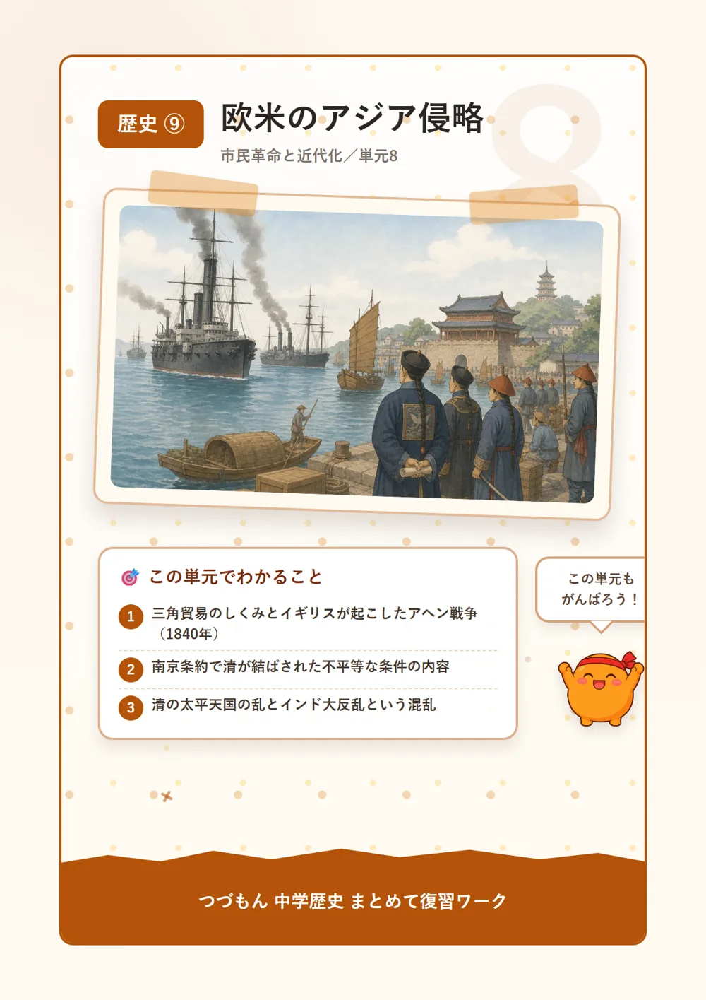

市民革命と近代化
 いっしょに
いっしょに読もう！
イギリスの革命

1啓蒙思想と近代政治の思想家たち
17〜18世紀のヨーロッパでは、人間の理性を使えばもっと良い政治や社会をつくれるという啓蒙思想が広まっていったんだ。イギリスのロックは、国家は人々の合意によって成り立つという社会契約説を唱え、政府が国民の権利を守らないなら従わなくていいという抵抗権を主張したんだよ。フランスのモンテスキューは立法・行政・司法に権力を分ける三権分立を、ルソーは政治を決める権利は国民にあるという国民主権を唱えたんだ。これらの思想が、その後イギリス・アメリカ・フランスで起こる市民革命に大きな影響を与えていくことになるよ。
2ピューリタン革命
17世紀のイギリスでは、議会を無視して独断で政治を行う国王チャールズ1世と議会派の対立がどんどん深まっていったんだ。清教徒(ピューリタン)を中心とする議会派を率いたクロムウェルが国王軍を破るピューリタン革命が起こったんだよ。1649年、チャールズ1世は処刑され、クロムウェルの指導のもと一時的に共和制がしかれたんだ。
3名誉革命と権利章典
クロムウェルの死後も議会を無視する国王が続いたため、1688年、議会は武力衝突なしに国王ジェームズ2世を追放する名誉革命を実現したんだ。すごいよね、血を流さずに国王を追放できたんだよ。翌1689年には、国王が議会の同意なしに税や法律を決められないと定めた権利章典が制定され、国王の権力が憲法や議会によって制限される立憲君主制がイギリスに確立したんだよ。

アメリカの独立革命

1課税への反発と独立への機運
18世紀後半、イギリス本国は北アメリカに築いた13植民地に対して、植民地の代表が一人もいない本国議会で勝手に重い税を課したんだ。人々は「代表なくして課税なし」を掲げて反発し、1773年には茶への課税に抗議した市民が茶箱を海に投げ捨てるボストン茶会事件が起こったんだよ。この対立はやがて、植民地がイギリスからの独立を求める動きへとつながっていくことになるんだ。
2独立戦争と独立宣言
1775年、ついに独立戦争が始まると、植民地軍はワシントンを総司令官として戦ったんだ。イギリスと対立するフランスの支援も受けられたんだよ。1776年には、ロックの思想の影響を受けて、生命・自由・幸福を求める権利はだれもが生まれつき持っていると宣言する独立宣言が発表されたんだ。1783年のパリ条約でイギリスは独立を承認し、1789年にワシントンは初代大統領に就任したんだよ。
3合衆国憲法と連邦制
1787年には、三権分立の考えを取り入れて、各州が自治権を持ちながら外交や軍事は中央の連邦政府がまとめて担う連邦制を定めた合衆国憲法が制定されたんだ。これは世界初の近代的な成文憲法なんだよ。その後の各国の憲法にも大きな影響を与えていったんだ。すごいことだよね。
フランス革命

1身分制社会とフランス革命の始まり
革命前のフランスは国王が絶対的な権力をもつ絶対王政の国だったんだ。聖職者の第一身分と貴族の第二身分は税を免除される一方で、人口の98%を占める平民の第三身分だけが重い税を負担していたんだよ。ひどい話だよね。財政難に陥った国王ルイ16世が1789年に聖職者・貴族・平民の代表を集める三部会を招集すると、同年7月14日、パリ市民が専制の象徴であるバスティーユ牢獄を襲撃して、フランス革命が始まったんだ。
2人権宣言と国王の処刑
革命政府は、人は生まれながらに自由で平等な権利を持つとする人権宣言を発表して、「自由・平等・友愛」の理想を掲げたんだ。この考えには、国の政治を決める権利は国民にあるという国民主権を唱えたルソーの思想が反映されているんだよ。1793年、絶対王政の象徴であった国王ルイ16世は処刑され、フランスは大きな混乱に陥ってしまったんだ。
3ナポレオンの登場とウィーン会議
革命後の混乱を収拾した軍人ナポレオンは、1804年に皇帝となったんだ。個人の自由と財産権を保障するナポレオン法典を制定して、ヨーロッパの大部分を征服してしまうんだよ。すごい勢いだよね。しかしロシア遠征の失敗などをきっかけに失脚し、ナポレオン失脚後の1814〜15年には、革命前の秩序に戻すことを目指すウィーン会議が開かれたんだ。
ヨーロッパの国民意識の高まり

1ナショナリズムと国民国家
フランス革命とナポレオンの遠征を通じて自由・平等の理念がヨーロッパ各地に広まると、19世紀には同じ言語や文化を持つ人々が一つにまとまろうとするナショナリズムが高まっていったんだ。個人の自由や権利を重んじる自由主義とともに、同じ国民による統一的な国民国家を求める動きが強まり、ナポレオン戦争の混乱に乗じて中南米ではスペイン・ポルトガルの植民地が次々と独立を果たしたんだよ。
2ドイツの統一
ドイツでは、プロイセンの首相ビスマルクが議会での話し合いよりも軍備の増強を重視する鉄血政策を進めたんだ。1871年に統一を達成してドイツ帝国が成立したんだよ。プロイセン国王がドイツ皇帝となり、ヨーロッパの新たな強国として台頭していったんだ。
3イギリス・フランスの政治の発展
フランスでは財産に関係なく成年男性全員に選挙権を与える男性普通選挙が実現したんだ。イギリスでは保守党と自由党という2つの政党が議席を争い政権を交代する二大政党制が発展していったんだよ。また、国を守るのは国民の務めだという考えから、成年男子を軍に集める徴兵制も各国に広まっていったんだ。
ロシアの拡大と発展

1南下政策とその対立
広大な領土を持つロシアは、冬でも凍らない港である不凍港を求めて黒海や地中海方面へ進出する南下政策を進めたんだ。これを阻止しようとするオスマン帝国と対立してしまうんだよ。世界の覇権国であったイギリスは、植民地インドへの通商路を脅かされることを恐れて、ロシアの南下に強く警戒したんだ。
2専制政治と農奴解放令
ロシアでは、皇帝の称号であるツァーリが議会や憲法に従わない専制政治を行っていたんだ。地主に隷属して自由のなかった農民である農奴も数多く存在していたんだよ。1861年、皇帝アレクサンドル2世は近代化改革の第一歩として農奴解放令を出して、農奴を解放したんだ。
3東方進出とシベリア鉄道
19世紀末からは、東方への進出と極東支配の強化を目的として、大陸を横断するシベリア鉄道の建設も進められたんだ。ロシアの拡大は、ヨーロッパだけでなくアジア方面にも及んでいったんだよ。
アメリカの拡大と発展

1北部と南部の対立
19世紀のアメリカでは、商工業が発達した北部は輸入品に関税をかけて国内産業を守る保護貿易を支持していたんだ。一方、黒人奴隷を使うプランテーションで綿花を栽培しイギリスに輸出する南部は関税の低い自由貿易を支持していて、両者は対立を深めていったんだよ。西部開拓が進む中では、もともと住んでいた先住民が土地を奪われ強制移住させられることも多かったんだ。悲しい話だよね。
2南北戦争と奴隷解放宣言
1861年、奴隷制に反対するリンカンが大統領に就任すると南部諸州が合衆国から離脱してしまい、南北戦争が始まったんだ。1863年、リンカンは南部の奴隷を解放する奴隷解放宣言を出して国際世論を味方につけたんだよ。同年のゲティスバーグ演説では「人民の、人民による、人民のための政治」と訴えたんだ。
3北部の勝利とその後
工業力に勝る北部が南北戦争に勝利して、戦後アメリカは急速な工業国へと発展していったんだ。奴隷制度は憲法修正によって正式に廃止され、その後のアメリカの発展の土台となったんだよ。
産業革命と資本主義

1産業革命の始まり
18世紀後半、イギリスの綿織物工業で紡績機や力織機による大量生産が始まり、技術者ワットが改良した蒸気機関が工場の動力として広まったことで産業革命が起こったんだ。工場に機械を設置し労働者を雇って生産する工場制機械工業が広まり、19世紀のイギリスは圧倒的な工業力から「世界の工場」と呼ばれるようになったんだよ。技術者スティーブンソンが実用化した蒸気機関車の登場は、鉄道網の発展とともに交通革命ももたらしたんだ。
2資本主義の広まりと労働問題
工場や機械を持つ資本家が労働者を雇って利益を追求する資本主義の仕組みが広まっていく一方で、長時間労働や低賃金に苦しむ労働者は権利を守るため労働組合を結成したんだ。産業革命は人々の暮らしを豊かにする一方で、新しい社会問題も生み出していったんだよ。
3社会主義の誕生
19世紀にはドイツのマルクスが『資本論』で資本主義の問題点を分析して、貧富の差のない平等な社会を目指す社会主義を唱えたんだ。資本主義への批判から生まれたこの思想は、その後の世界の政治や経済に大きな影響を与えていくことになるんだよ。
欧米のアジア侵略

1三角貿易とアヘン戦争
19世紀、イギリスは清に茶の代金として銀を払う代わりに、インド産のアヘンを清に密輸して、清の茶とイギリスの綿織物を組み合わせる三角貿易の仕組みを作ったんだ。清がアヘンの密輸を取り締まると、イギリスは1840年にアヘン戦争を起こしてこれを破ってしまったんだよ。
2南京条約と不平等な扱い
1842年、イギリスは清に南京条約を結ばせたんだ。この条約で清は香港を割譲し、上海など5港を開港し、輸入品の税率を自国で決める関税自主権を失うなど、一方的に不利な不平等条約を結ばされてしまったんだよ。さらに清国内での犯罪をイギリス側の法で裁く領事裁判権も認めさせられたんだ。
3清とインドの混乱
清国内では、アヘン戦争後の混乱の中で洪秀全が率いる太平天国の乱という大規模な農民反乱も起こったんだ。1857年には、インドでイギリス支配に反発した現地人傭兵から始まるインド大反乱が起こり、鎮圧後はイギリスによる直接統治が強化されたんだよ。